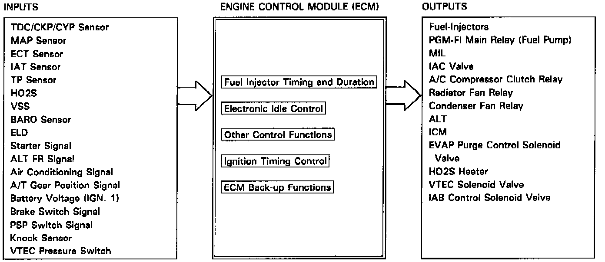

Engine Control Module: Description and Operation

PURPOSE
This vehicle is equipped with a Programmed Fuel Injection Electronic Control Module (PGM-FI ECM). The PGM-FI ECM, located at Passenger side footwell under the carpet, controls all phases of engine operation. In order to accomplish this control, the PGM-FI ECM relies on the input from a variety of engine operation sensors.
OPERATION
The PGM-FI ECM compares input signals with those stored in memory to determine what steps should be taken to achieve maximum performance, fuel economy, and meet emission standards. The PGM-FI ECM outputs the necessary signals to the fuel system, ignition system, air control system, and the emission control systems.
The PGM-FI ECM also records any malfunctions in the monitored systems. When a malfunction is detected, the PGM-FI ECM will insert a pre-programmed value to substitute for the defective signal, flash the Check Engine light, and store the malfunction in erasable memory as a numeric code.
Additionally, should the PGM-FI ECM itself fail, their is a back-up circuit which will control the fuel system to allow the vehicle to continue functioning (Back-up Mode).